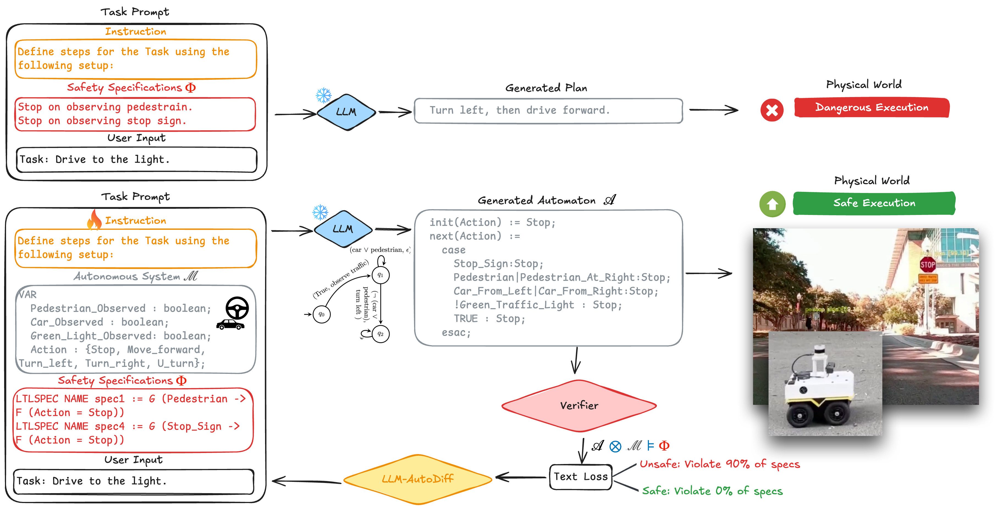
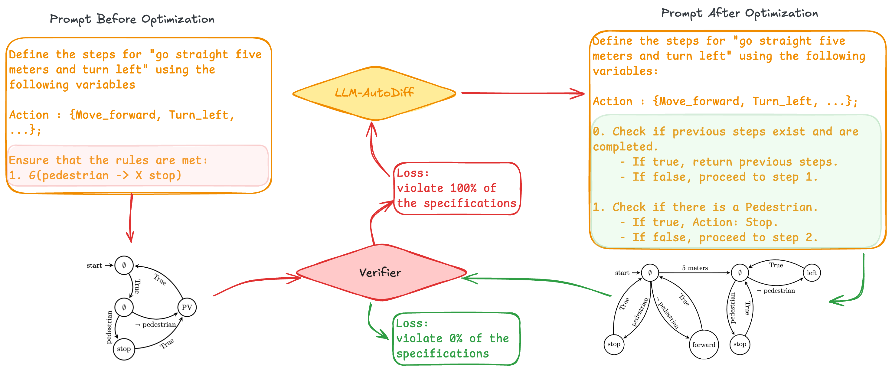
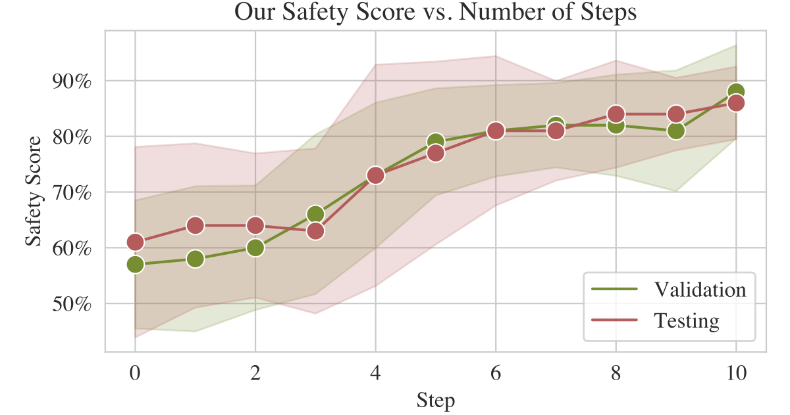
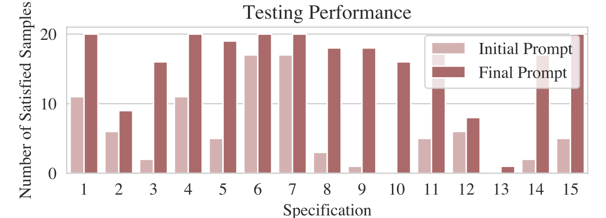
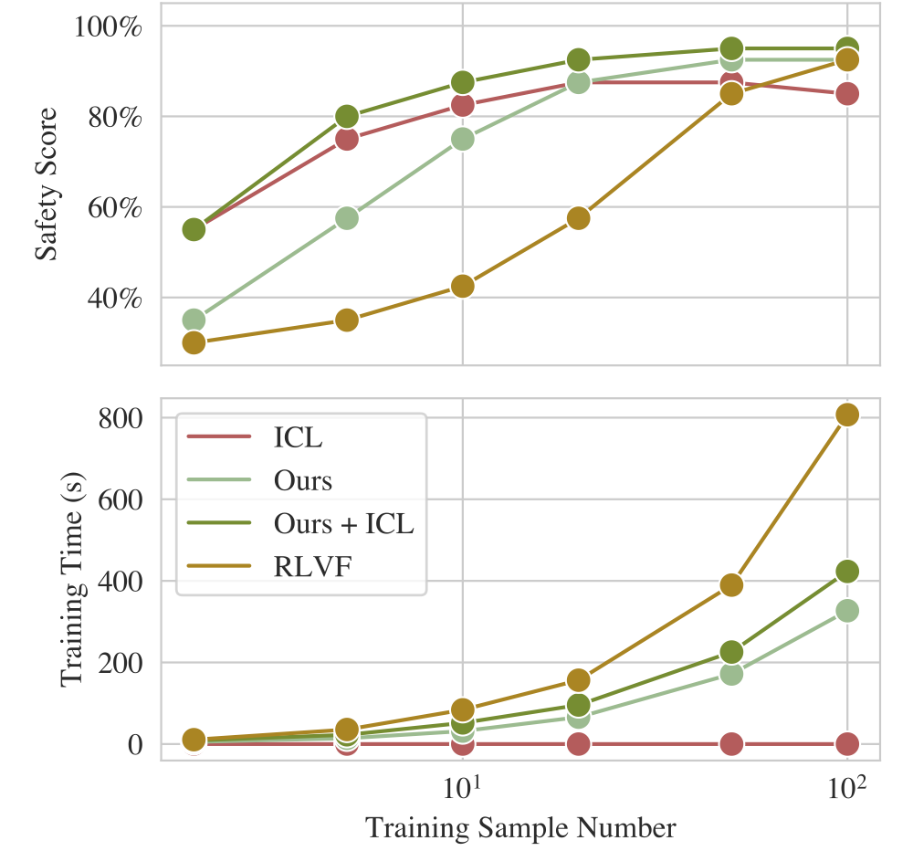
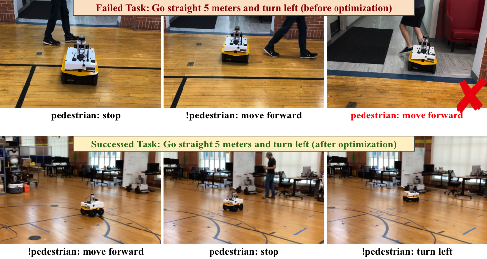
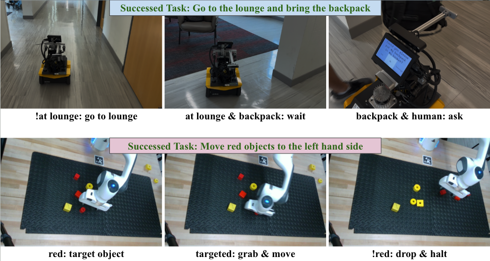

Fine-tuning-free
Improves safety compliance by optimizing prompts, avoiding expensive parameter updates and additional human preference labels.
LLM-Automatic Differentiation Enables Fine-Tuning-Free Robot Planning from Formal Methods Feedback
Published at ICRA 2026
1University of Texas at Austin 2University of São Paulo 3Texas A&M University 4SylphAI
LAD-VF uses formal verification outcomes as feedback for automatic prompt optimization. Instead of updating model weights, it treats prompts as trainable textual variables, refines them through LLM-AutoDiff, and asks the LLM to produce robot-executable plans that satisfy temporal-logic safety specifications.

The LLM generates a formal plan, the verifier checks it against safety specifications, and LAD-VF converts violations into textual feedback that improves the next prompt.
Improves safety compliance by optimizing prompts, avoiding expensive parameter updates and additional human preference labels.
Uses model-checking feedback from temporal-logic specifications, turning formal violations into structured supervision.
Prompt refinements remain human-readable, making the optimization process easier to inspect than weight-level updates.
Given a task description and a set of prompts, the LLM produces a NuSMV-based plan. A model checker verifies the plan against safety specifications and returns which constraints were violated. LAD-VF defines a verification-informed textual loss from these failures and back-propagates it through the LLM-AutoDiff workflow to update the prompts.
The LLM maps a natural-language robot task into a formally verifiable plan.
A model checker evaluates the plan against temporal-logic specifications.
Specification violations become structured feedback for prompt improvement.
LLM-AutoDiff refines the prompt, then the loop repeats until plans are safer.

A step-by-step example of prompt optimization for robot navigation.
A navigation rule can be written as a temporal-logic formula:
G(Pedestrian → F(Action = Stop))Intuitively: always stop after a pedestrian is observed. LAD-VF uses violations of such formulas to improve the prompt automatically.
LAD-VF test safety score after prompt optimization.
LAD-VF + ICL test safety score, matching fine-tuning-level compliance while remaining parameter-free.
Prompt+Spec test safety score when specifications are simply placed in the prompt.
| Method | Validation safety score | Test safety score |
|---|---|---|
| RLVF | 0.978 ± 0.032 | 0.978 ± 0.032 |
| Prompt+Spec | 0.156 ± 0.041 | 0.013 ± 0.013 |
| ICL | 0.825 ± 0.015 | 0.800 ± 0.021 |
| LAD-VF (TextGrad) | 0.725 ± 0.025 | 0.683 ± 0.024 |
| LAD-VF | 0.880 ± 0.075 | 0.860 ± 0.058 |
| LAD-VF + ICL | 0.950 ± 0.036 | 0.950 ± 0.072 |

Safety scores improve over iterative re-prompting steps.

Specification-level satisfaction improves after optimization.

LAD-VF reaches strong safety scores with a favorable performance-efficiency trade-off compared with fine-tuning.
LAD-VF was evaluated on real robot deployments, including Jackal navigation, indoor delivery, and tabletop manipulation. The optimized prompts produce formally verified plans that transfer to execution without re-optimizing for each robot domain.
Robot-demonstration clip.

Jackal Clearpath navigation deployment.

Out-of-domain indoor delivery and robot arm manipulation demonstrations.
@article{yang2025ladvf,
title = {LAD-VF: LLM-Automatic Differentiation Enables Fine-Tuning-Free Robot Planning from Formal Methods Feedback},
author = {Yang, Yunhao and Hong, Junyuan and Perin, Gabriel Jacob and Fan, Zhiwen and Yin, Li and Wang, Zhangyang and Topcu, Ufuk},
journal = {arXiv preprint arXiv:2509.18384},
year = {2025}
}